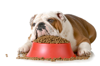
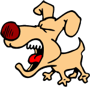
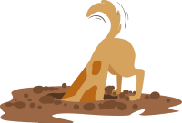
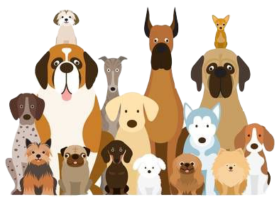

Training is an important part of any dog's life, and is important for several reasons. It provides mental stimulation which helps to keep your dog happy, and if combined with morning exercise your dog will be mentally and physically tired at the end and far more likely to sleep during the day.
More importantly, training is an excellent way to bond with your dog and will help you build a good relationship with them.
Start your training with this 4 essential besic commands which help you keep your dogs under control and give them a sense of structure and order
Sit command is a way to help your dog settle a little bit in one place and focus on you. The training can also help lay the groundwork for other more complicated commands
Teaching your dog to come to you when called is an essential part of proper dog training. This command can help keep a dog out of trouble, bringing him back to you if you lose grip on the leash or accidentally leave the front door open.
You can teach a puppy to come when called as soon as it learns its name.
The “stay” command can prevent your dog from getting involved in dangerous situations. It will also allow you to keep your dog still and calm while you take care of household chores, entertain guests, or bring it to public places
Before attempting this one, make sure your dog is an expert at the “Sit” command.
When training, start with one to two second periods of staying and work your way up to several minutes.
The “drop it” command is very important to train your dog. It can protect a dog when it has something dangerous in its mouth, plus it allows you and your dog to play games like tug-of-war and fetch safely.
Most dog owners will face some kind of behaviour issue in a dog’s lifetime. Sometimes dogs can suddenly exhibit bad behaviors—even dogs who are otherwise on their best behavior. Since dogs have no sense of morality, they don't do something because it's "wrong" or "right." They just do whatever work. Behaviour like barking, jumping up,digging and inappropriate urination can be changed by training and some exercises
The first thing to remember about barking is that it’s natural and, for many dogs, it’s quite enjoyable. Dogs bark for reasons like warning, excitement, seeking attention, anxiety ,respond to other dogs or just because they are boring.
Jumping up is a common and natural behaviour in dogs. They jump up to greeting their owner or other people. Dogs may also jump up when excited or seeking an item in the person's hands. However, jumping up sometime can be annoying and dangerous.
Jumping up is an attention-seeking behaviour, so any acknowledgement from you will reinforcing the jumping. Lifting a knee, grabbing the paws, or pushing the dog away will not stop this behaviour.
 Digging is a natural canine instinct and can’t be shut down. Certain dog breeds, like terriers, are more prone to digging because of their hunting histories. In general, most dogs dig for reasons like boredom, desire to hide bones or toys, comfort-seeking (cooling off or nesting) or hunting instinct.
When you have a dog, you know that accidents happen. Inappropriate urination and defecation are among the most frustrating dog behaviours. It might be a consequence of some health issues, so make sure discuss this behaviour with your veterinarian first. If no medical cause is found, If no medical cause is found, try to determine the reason for the behaviour, which can come down to lack of training, anxiety and territorial making.
No two dogs are alike. They are unique in shape, size, personality and health.
 Each dog has their own genetic health problem that comes with the breed. Some breed is prone to certain health conditions more than others. For example, a dog with a short face trend to have a breathing problem.
It is essential for the dog owners or anyone who plan to have a dog to understand and be aware of the health problems that your dog breed is prone to. Therefore, you can help prevent and take better care of your best four-legged friends and prepare for any additional fee for vet care.
Siberian Huskies is relatively healthy and clean breed dog compare to other. However, Huskie eyes are sensitive and they can have variety of eye issues, such as Progressive Retinal Atrophy, Corneal Dystrophy and Uveodermatologic Syndrome.
The most common health problems associated with Beagles are cherry eye, Chinese beagle syndrome and diabetes. Chinese beagle syndrome causes some beagle to walk like a ballerina. If your dog suffers from this syndrome they are more likely to have walking disorder when they enter a senior age. Most of beagle have no self control when it come to food. If a Beagle become overweight for long time, they may develop diabetes.
The popular Labrador retriever is a medium-large breed, so it is prone to Hip Dysplasia. Ear infections in dogs are common for Labradors due to the intrinsic structure of their ear. Labradors are known for rapid eating which can cause dangerous gastric distention, known as bloat in dogs.
The popular Golden Retrievers are a loving and loyal breed that make a wonderful addition to a family. Common health issues associate with this breed are skin allergies including ear infection, hypothyroidism and bone cancer.
Pugs are well known for their wrinkled faces, stubby legs, and compact frame. Unlike many dog breeds, Pugs were not breed to perform a task. They are not hunters, guard dogs, or retrievers; instead, they are companion dogs. They are a unique breed, and with their genetic composition comes a specific set of Pug health problems like tail problem, breathing problem and eye problem. Pug’s unique Q tail shape is perfect to a great breeding ground for fleas. Pugs can have hard breathing in a hot climate and snoring problem due to their short and narrow nasal. Due to the inherently bulging nature of Pug eyes, they are more susceptible to develop a myriad of eye issues.
The German shepherd is known to be very intelligent, calm and loyal but because of their loyalty they can have anxiety when the owner is not around. It is noted as being particularly prone to hip dysplasia, Diabetes, and Thyroid issues is their generic disease.
Rottweilers are naturally docile, smart, calm and don’t require lot of exercise.Like every dog breed with big bone, Rottweiler can suffer from hip dysplasia and osteochondrosis, a degenerative bone disease.
Corgi are generally pretty healthy little dogs. However, their small size puts them at a disadvantage. Corgis are classified as a dwarf breed, meaning they have the head and torso of a “normal” sized breed but have those short legs. As a result Corgis are prone to popular health problems from both big and small breeds. For example hip dysplasia(commonly found in bigger dog) and obesity(commonly found in small breeds). They are also prone to Von Willebrand Disease, a blood disorder that make their blood not able to clot.
The Dachshunds have unique body shape which can cause some health problem. Intervertebral disk disease and obesity are commonly found in short le dog like dachshunds. Dachshunds can suffer from a variety of different skin problems including flea allergy dermatitis, food reactions, and Sarcoptic Mange.